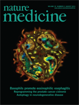

News
- Oct. 2015
- Aneesh's paper on optogenetic pacing of Drosophila heart appeared online in the new Science journal, Science Advances! Congratulations!
- Sep. 2015
- Mr. Mingming Chen joined our group as an exchange student. Welcome onboard!
- Our lab receives a R15 grant from the National Institute of Health (NIH) to develop optogenetic pacing technologies for fruit flies!
- Our lab, together with Prof. Yevgeny Berdichevsky's lab at Lehigh, receives a R21 grant from the National Institute of Health (NIH) to develop high-speed OCT technologies to image neuron activities!
- Aneesh's paper on Drosophila heart development appeared online in PLOS One! Congratulations!
- Aug. 2015
- Dr. Jitendra Solanki joined our group as a post-doctoral associate. Welcome onboard!
- Mr. Lian Duan and Mr. Penghe Wu joined our group as PhD students. Welcome onboard!
- Congratulations to Aneesh for the acceptance of two papers (one in PLOS One and one in Science Advances) in one week!
- May 2015
- Our lab receives a grant from the National Science Foundation (NSF) to develop high-speed SDM-OCT technologies for biological research!
- Mar. 2015
- Congratulations to Aneesh for starting his new job at GSK (GlaxoSmithKline)!
- Congratulations to Andre for getting accepted to continue his graduate study at Caltech!
- Congratulations to Jonah for getting accepted to continue his graduate study at Stanford!
- Jan. 2015
- Our lab receives a grant from the University City Science Center to further develop SDM-OCT technology for ophthalmic applications!
- Sep. 2014
- Fengqiang's paper was published on Neurophotonics! Fengqiang Li, Yu Song, Alexandra Dryer, William Cogguillo, Yevgeny Berdichevsky, Chao Zhou. Nondestructive evaluation of progressive neuronal changes in organotypic rat hippocampal slice cultures using ultrahigh-resolution optical coherence microscopy. 025002, 2014.
- Congratulate Dana for getting fellowship and starting her college at Stevens Institute of Technology in New Jersey!
- Welcome Jing and Shu to join the group!
- Apr. 2014
- Andre received the RCEAS UG Summer Fellowships for his research in Z-lab!
- Fengqiang completed NYCRIN I-Corps program from National Science Foundation with 68 interviews in 7 weeks! The lesson learned vedio and tech vedio are on the right side top of the page.
- Nicole was accepted into Erasmus Mundus Master Program with the Scholarship!
- Feb. 2014
- Prof. Zhou gave a presentation titled "Space-division multiplexing optical coherence tomography" at Photonics West 2014!
- Aneesh gave two presentations titled "Longitudinal characterization of Drosophila heart development using optical coherence microscopy" and "Functional analysis of Drosophila heart development using optical coherence microscopy" at Photonics West 2014!
- Fengqiang gave a presentation titled "Evaluation of spontaneous seizure induced neuronal changes using optical coherence microscopy" at Photonics West 2014!
- Jan. 2014
- Aneesh's paper was published on Biomedical Optics Express! Aneesh Alex, Mario Noti, Elia D. Tait Wojno, David Artis, C. Zhou. "Characterization of eosinophilic esophagitis murine models using optical coherence tomography", Biomedical Optics Express, 2014.
- Fengqiang's paper was published on Journal of Biomedical Optics! Fengqiang Li, Ting Xu, Duc-Huy T. Nguyen, Xiaolei Huang, Christopher S. Chen, C. Zhou. "Label-free evaluation of angiogenic sprouting in microengineered devices using ultrahigh-resolution optical coherence microscopy", Journal of Biomedical Optics, 2014.
- Nov. 2013
- We are excited to welcome XianXu Zeng to join our group as a visiting scientist!
- Our work is Feature of The Week 09/23/2013 on OCT news, 2013.
- Aug. 2013
- Chao Zhou's paper is one of the top downloads in August 2013! Chao Zhou, Aneesh Alex, Janarthanan Rasakanthan, and Yutao Ma. "Space-division multiplexing optical coherence tomography" Vol.21, No. 16, Optics Express, 2013.
- Nicole's abstract was accepted as poster presentation in BMES 2013 Annual Meeting for September 25-28 in Seattle!
- Jul. 2013
- We are excited to welcome Yongyang Huang to our lab as Ph.D candidate. Yongyang received his B.S from Peking University in Physics in China in June 2013.
- Chao Zhou's paper was accepted in Optics Express! Chao Zhou, Aneesh Alex, Janarthanan Rasakanthan, and Yutao Ma. "Space-division multiplexing optical coherence tomography", Optics Express, 2013.
- Aneesh Alex and Chao Zhou's co-author paper was published in Nature Medicine as cover! "Thymic stromal lymphopoietin-elicited basophil responses promote eosinophilic esophagitis" in Nature Medicine 19, 1005-1013 (2013). The cover is shown on the right side top of the page.
- Jun. 2013
- Aneesh Alex and Chao Zhou's co-author paper was accepted in Nature Medicine! "Thymic stromal lymphopoietin-elicited basophil responses promote eosinophilic esophagitis" in Nature Medicine, 2013.
- May 2013
- Fengqiang gave a poster presentation in XXVIth International Symposium on Cerebral Blood Flow, Metabolism and Function & XIth International Conference on Quantification of Brain Function with PET in Shanghai!
NYCRIN I-Corps program learned vedio
Tech video

Nature Medicine cover about Aneesh Alex and Chao Zhou's co-author paper